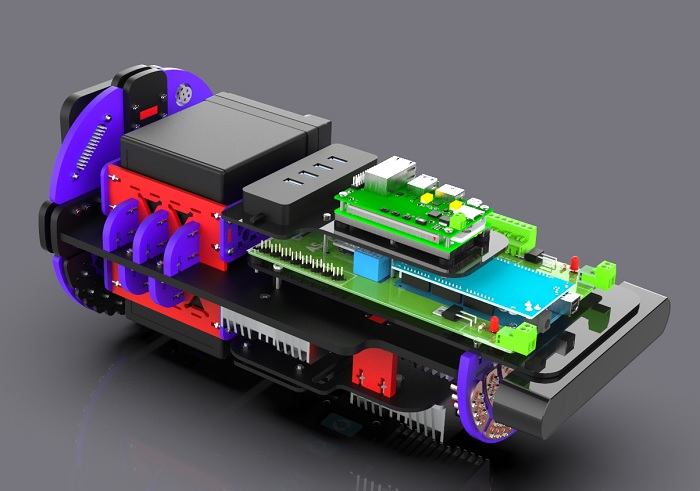

Autonomous Underwater Vehicle (AUV)
This project entailed the end-to-end development of an Autonomous Underwater Vehicle (AUV) to represent Ain Shams University at the RoboSub International Competition, hosted by the U.S. Navy's SPAWAR Systems Center at the TRANSDEC Anechoic Test Facility in San Diego, California. Our team of 30 engineering students was divided into three main divisions: Mechanical, Software, and Electrical. I led the Electrical and Embedded Systems Division—becoming the youngest team lead in the School of Engineering. We were the only team from the Middle East to participate in this globally recognized competition.
My contributions focused on the architecture, design, and integration of the AUV's real-time embedded systems, power electronics, and digital communication frameworks. I also designed and led a comprehensive 3-month onboarding program for new members, covering advanced embedded topics including protocol stack implementation, ADC/DAC interfacing, communication protocols, and real-time diagnostics.
System Architecture & Embedded Subsystems
The core deliverable of our division was a fully integrated Electrical Kit, engineered around a modular and noise-isolated architecture, divided into two domains:
-
Power Management Domain:
Designed a custom power delivery and protection system using DC-DC buck converters, MOSFET switching circuits, and resettable fuses. The system included:- High-efficiency power buses at 12V, 5V, and 3.3V rails.
- Power routing to BLDC motors through ESCs with soft-start and overcurrent protection.
- Load balancing and current monitoring via shunt resistors and sensors interfaced over I²C.
-
Control and Processing Domain:
Developed a multi-layered embedded system stack incorporating:- NVIDIA Jetson Nano for high-level autonomy, computer vision, and mission logic (running ROS).
- STM32 and Arduino Nano for low-level actuator control and sensor data acquisition, programmed via bare-metal C++ and FreeRTOS where appropriate.
- Serial communication protocols: Implemented robust UART and I²C bridges for inter-microcontroller messaging with CRC validation and watchdog timers.
- Sensor suite including IMU, barometer, and cameras for environmental awareness and dead-reckoning navigation.
- Pulse-width modulation (PWM) control for servos and motor outputs with coorect timing resolution.
To maintain integrity between both domains, the architecture used galvanic isolation (opto-isolators) between high-power and logic-level subsystems, and careful PCB layout separation to prevent EMI propagation and thermal coupling.
Software-Defined Behavior & Real-Time Capabilities
- Implemented mission planner logic using finite state machines (FSMs) integrated into the Jetson's ROS node hierarchy.
- Developed a diagnostic telemetry module that streamed live system vitals (voltage, current, temperature, fault codes) to a surface station GUI via a custom UART-to-Ethernet bridge.
- Established a modular bootloader for STM32 MCUs to allow field-upgradable firmware during development and test cycles.
- Used Git for version control and KiCad/Altium for circuit schematic capture and PCB layout.
Mission Execution Capabilities (Accomplished in Competition):
- Navigate autonomously from dock to mission zone using compass + dead-reckoning.
- Traverse an obstacle field via depth and IMU feedback.
- Drop weighted markers on detected visual targets.
- Fire pneumatic torpedoes at buoy targets identified via color segmentation.
- Localize acoustic pingers using a four-hydrophone array, retrieve a mock payload, and deposit it in a designated zone.
Mechanical Frame:

Electrical Kit – Control Side:
Electrical Kit – Power Side:

Final AUV Assembly: